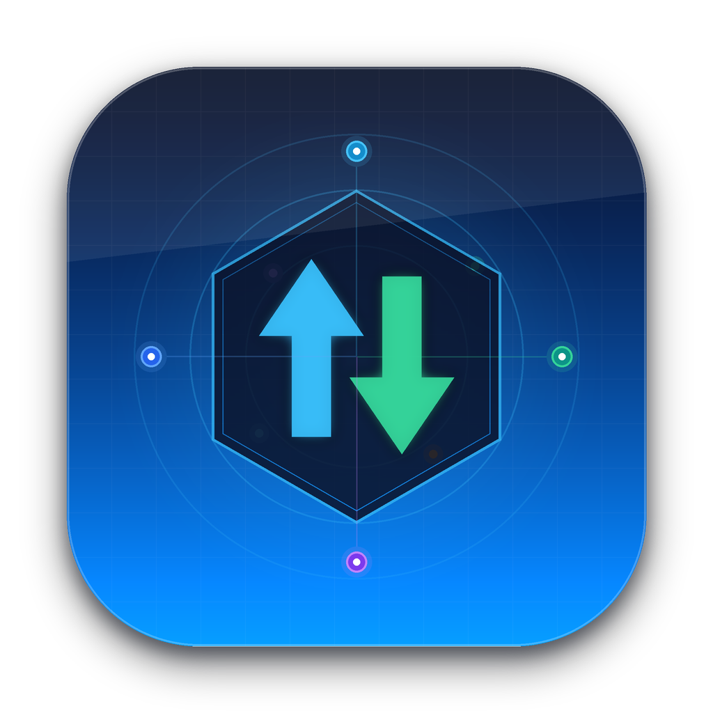

3CDaemon 重制版 • TFTP 服务器 • TFTP 客户端 • FTP 服务器 • Syslog 日志服务器
源自 3CDaemon 的四大网络工具概览
支持 RFC 1350、块大小与超时协商
上传 / 下载目录： ~/Downloads/SysTFTP/TFTP
✓ 允许覆盖已有文件： 否
✓ 允许为上传请求创建目录： 是
✓ 数据包超时： 5 秒 | 最大重试次数： 10
向远程网络设备上传或下载文件
服务器： 192.168.1.1:69
模式： Octet（二进制） | 方向： 发送文件（上传）
远程文件： vrpcfg.cfg
已传输 65% • 1.42 MB/s • 预计剩余 4 秒
支持 RFC 959、精细权限管理与 chroot 目录隔离
用户： anonymous （只读） | admin （完整权限：上传、下载、覆盖、删除、创建目录）
通过 UDP 514 实时接收 Syslog 日志，支持按日轮转
| 时间 | 来源 IP | 日志来源 | 严重级别 | 消息 |
|---|---|---|---|---|
| 15:16:12 | 192.168.1.1 | 本地 7 | 错误 | %LINK-3-UPDOWN: Interface GigabitEthernet0/1, changed state to down |
| 15:16:14 | 192.168.1.1 | 本地 7 | 警告 | %OSPF-5-ADJCHG: Process 1, Nbr 10.0.0.2 on Gi0/1 from FULL to DOWN |
| 15:16:22 | 192.168.1.1 | 本地 7 | 通知 | %SYS-5-CONFIG_I: Configured from console by admin on vty0 |
| 15:17:00 | 192.168.1.200 | 系统服务 | 信息 | ntpd[482]: synchronized to 203.0.113.10, stratum 2 |
端口预设： 标准端口（69、21、514）与普通端口（6969、2121、5140）
菜单栏图标： 已在 macOS 菜单栏启用